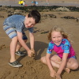
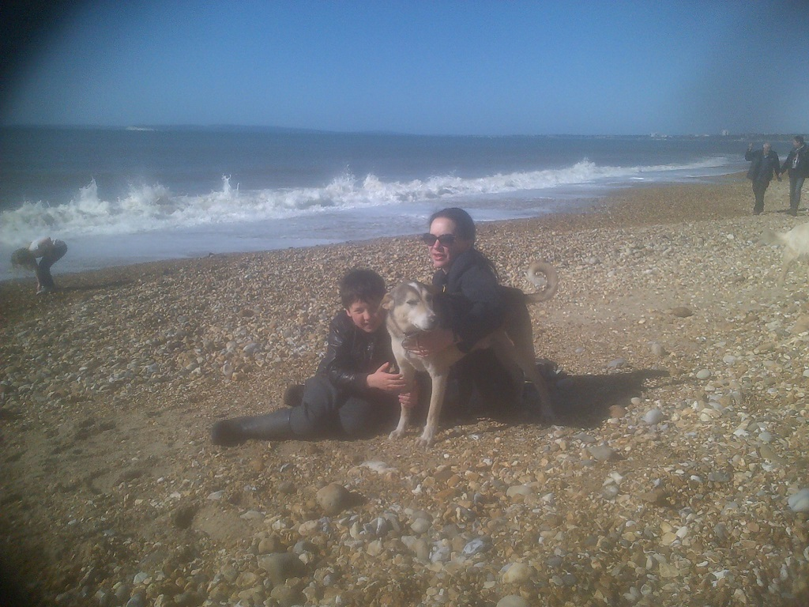

|  |
Blogging is my business! | |
|
|
Hi and welcome to the most interesting blog around. Lots of new and fascinating updates about my life nearly every day. Click here for blog 2015 18 Dec 2108 In Centre Parks Suffolk at the moment! Life is a whirl!! 03 Dec 2017 Silence is golden. Given to fuel and fire. I believe or lie. 02 Dec 2017 I am entitled. To anything I choose. Enjoy! 01 Dec 2017 Releasing a healing opportunity. For a surface level contract. Reflecting self talk. 30 Nov 2017 The quantum self is the way forward. Personally I concede. There is no outside. 29 Nov 2017 Being a narcissist has it's downside. Though I am evolving. I hope everyone is evolving. 11 Mar 2017 I seem to be unwittingly learning more about this damned game called rugby. Kaelan loves it. It is the six nations today and England are due to beat Scotland at 4pm. Can't wait to see the aa cry. Don't know why Scotland even turn up to be honest. My prediction England 100 - Scotand 1. 06 Mar 2017 My booboo is 10 today - I don't know whether to be happy or cry. Why is he growing up? Though on a positive note I don't have to wipe his bum now. Well, actually, I still do. He likes it. Aden has started playing the harp - very natural for him. He can play it with his left hand. Storm is also here. Say no more. She is a handful. C'mon Shitty That refers to a premier team football club. 24 Feb 2017 Kaelan won a certificate for French! I didn't know he was a frog? Let them speak English, thats what I parlay. 17 Feb 2017 Aden was star-of-the-week in his class, for passing the TABLES OF DOOM!!! Yipee!! 01 Jan 2017 HAPPY NEW YEAR! In Africa at the mo! Being in the UK is so boring at the New Year. On safari with the wild animals and people. 25 Dec 2015 MERRY CHRISTMAS!! The presents the kids enjoyed: Pokemon Cards, War Hammer charcters, table football. Kids want to go up to Scotland at Christmas next year. Are they crazy? 1st Christmas without Ruuskii in many years. I'm sure he is crunching tastey bones in doggy heaven, with Nero (and Pashee). 17 October 2016 Went to Battle to see the Battle of Hastings 950 aniversary of William the Bastards defeat of Harold Godwinson II. Splendid show, really authentic, over a thousand soldiers dressed in period costume knocking lumps out of each other! Boys enjoyed it! Hawk and eagles were on display as well, quite amazing. Went to Eastbourne on the way back to NF. Boys were quite exited with 2p slot machines in the pier, I can remember those types of machines from my youth! Aden lost his helmet from Battle, however, he got a sweety, or two from the pier. Aden was under 9B player of the match on Friday! He was goaly and saved 5 goals - only let in 1!! Unfortunately Wallyhall lost, but Aden defo won! Kaelan, not be outdone has been player of the match before, of course, he was quick to remind me. Siblings. 07 October 2016 Some days are darker than others. Today isn't that bad. Boys are growing up. 30 September 2016 Riley arrived today. Lovely whippet, greyhound, lurcher doggy. Will post photos later. He is a rescue dog. Like Ruuskii was. 03 September 2016 The boys are going back to school on Thursday, the last fews days I have to enjoy them :( I went to a rescue dog parade today. Even though Ruuskii recently left us, I feel I could help another rescue dog. They could never replace Ruuskii of course, but I could give another one a good home. I remember picking Ruuskii up in Dubai. He enjoyed his life since then. I had to toilet train him at first but he was good as gold after. Poor thing. I miss you Ruuskii. 28 August 2016 Birthday party in Orpy today! My goodness, my friends are getting old! Luckily that doesn't happen to me. Also, went see Sally's bush via her back passage. Thankfully her bush has been tidied up recently, it was getting a little bit dishevelled around the edges. Forgot to ask who did the trimming, my bushy area could do with some attention as well. 27 August 2016 Aden discovered his vocation today - ball boy for Sway FC! He was tempted to steal the ball the first time it came his way but I explained he had to give it back. He reluctantly did so, but after he got the hang of it, he was running all round the place getting the ball for both teams. 10/10 for Aden. 0 - 2 to the Sway opposition, unfortunately. Though I was upset at the players, they swear too much! 21 August 2016 WE ALL CYCLED TO BROCKENHURST TODAY!! NEXT TIME MY BOYS WILL BE IN THE 2024 Olympics, mark my words! Though their peckers did droop on the excursion. Espesh on the way back to Sway. They had ICE-CREAM at the COLONIAL when we got to Brockenhurst. As a reward, of course. Unfortunatley Matthieus wasn't in when we knocked on his door. Next time!! 20 August 2016 GO TEAM GB!!! DID YOU SEE THE LADIES HOCKEY FINAL LAST NIGHT!! I QUITE LITERALLY COULDN'T WATCH!! WELL DONE LADIES! I need to calm down. Kaelan is getting football tuition today, not from the aa but a local young budding footballer. I can see an improvement already!! Brambles today. 19 August 2016 aa put up the trampoline yesterday. Bet he wishes he hadn't today! HAHAHA! 14 August 2016 Went to Scotland for a week. Wish I hadn't. Kids seemed to enjoy it though. Don't know why. Came back today. Zozzee missed us. Of course. Quite exhausted. Long drive back down in one day and of course I drove all the way. BUT LOOK AT TEAM GB!! Second place in the Olympics! I have never seen that before! 12 August 2016 Met up with the Mac'Beths today in Edinburgh. Those from Armenia. Good fun had by all. Though I do not know how they cope with four children!! But in saying that, I have a multitude of kids as well: humans, dogs, cats, pigs, chickens snakes, fish and all the animals in the garden. Went to the science museum. Lost Jack, but thankfully found him again. We heard a story about dinosaurs and wizards and witches. James sr was a splendid T-rex with a mouse pitched voice. Even Jason joined in! Though he had to be woken up first of all. Then the funniest bit. The aa is offically an old man. HAHAHAHA. He was asked to go up on stage during a puppet show because he is so old. We also watched a comedy performance by an injured juggler - James jr helped and was fab. Went for meal at TGI Fridays. Very good and kids behaved, mostly. Moira confided that she fancies Kaelan and NOT Aden now. And importantly, went up to Edinburgh by train! Of all the modes of transport, the hobbits have almost joined the 19th century! Idiots. 01 Aug 2016 I must be strong. 31 July 2016 May cancel my holiday. Missing Ruuskii. 30 July 2016 Ruuskii is dead. I still miss him. 24 July 2016 Kaelan literally got thrown off a pony today. Not by the pony, but by the girl putting him on to the pony!!! In Brockenhurst of all places. Any way he did a canter later on, and Aden did some trotting. 11 July 2016 Going to Legoland with Kaelan and three of his friends, this is a belated birthday present, best to go when weather is best. 10 July 2016 Booboo Aden's birthday today! He is 8. And my is he getting big. He seemed a foot taller yesterday when he collected his prize in front of the whole of Walhampton pupils and parents at the Founders day. Most improved pre-prep student! 20 June 2016 Ah to have reached the age of 30 is quite something! Fans from far and wide came to celebrate with me, I counted at least 10,000 camped around the castle. Even my sister came for the event! Not sure how she got here, probably walked. We had a banquet fit for a Queen! Everyone enjoyed the spectacle and taste of roast chicken made my the aa. Eh? Oh no I feel quite sick now. 11 June 2016 I always take Zorro when I visit Ruuskii's grave. 10 June 2016  I visited his grave again this evening. 04 June 2016 I do not know how to express Ruuskii's life. Do I need to? Why? 27 May 2016 Ruuskii was my friend. I miss him greatly. 26 May 2016 Ruuskii died today. It pains me greatly to write those words. Ruuskii deserves more words than I can write at the moment. Tomorrow. 18 May 2016 So much to do. So little time. Time for a poo break, Write a little rhyme. I have poetry in my bones. 09 May 2016 The plan would be to view the future. Conversely, a view of the plan would represent past aspirations. But how far we deviate from both is a description of real experience. Sometimes philisiphy is more suited to me. Other times I am a musician. But always up my ass. 08 May 2016 Top trumps are top at the mo! Star Wars is the theme. 07 May 2016 Sailing boat day at WallyHall today. I entrusted the aa with building the "winning" boat. What a flop that was. Anyway, good fun had by all and Roo came round to the house to help create an insect home in the garden afterwards. Not sure why the Aden spat in the aa tea though! 04 May 2016 The wind keeps on blowing. 03 May 2016 Had some Banstead fans down at the weekend. They enjoyed my hospitality of course. Though they had challening dietry needs. They are thinking of buying a dog so I ordered Ruuskii and Zorro to be on their best behaviour. They obeyed. Shame my kids couldn't be so well behaved. It does my head in that they will not listen. 01 May 2016 15 today! 26 April 2016 Busy Busy Busy - always busy. 25 April 2016 Hobbits were down visiting recently. They love the pigsty. Litterally happy as larry messing about in the mud with the pigs. 19 April 2016 Moving Moving Moving. 12 April 2016 Still galavanting around Oz... I have to fill my time with something. Kids are loving the down under life. Lots of photos! 01 Apr 2016 April fools day is an opportunity to have a joke. No. It is an opportunity to say the truth. Wales and Scotland? Go your own way. Nobody wants you anyway. "Hey Ass! You are NOT the best ever!" Precisely. 30 Mar 2016 Which is more important? The discovery of a continent? Or a continent's discovery of me? The answer is straight-forward. Off to Australia this morning! A continent waits with anticipation, but it will not be disappointed. Oh no. I will step gracefully on to it and it will carry me forth to meet my new anti-podium fans. My booboos are with me. I expect we will be exalted on this tour. As per usual. In case I get dizzy, I have been practising my hand-stands. Oooroo and cheerio. 28 Mar 2016 Happy Birthday Granny Aggie! Aden has no front teeth. Seriously both are missing at the moment. It had to happen to one of them. Aden did have one front tooth left, then bit into an apple and the remaining one promptly fell out. Hope they grow back! 10 Mar 2016 Believe it or not, it is 10 years to the day since I left Jersey to go to Dubai. Wow seems like yesterday! Much has changed, of course. I have acquired two booboos since then, well actually I have acquired more than two (think of all the animals), but unfortunately I have lost two (booboo Nero and booboo Pashee). More unfortunately for me though, I haven't got rid of that bit of sh*t I picked up in Jersey: the aa. However, I have plans for him. Don't worry. 06 Mar 2016 Happy birthday to me! Oops I mean to Kaelan. Happy Mothers day to me! I have a problem sharing my day with anyone but for Kaelan I will make an exception. Kaelan chose where we took the dogs to today, the beach at Christchurch - much nicer than Clay Hill. It was very chilly though. But at least on another trip, Aden did not fall into water. Well done Aden! We walked along the beach to the train stop, then got the train back to the cafe, then had some ice-cream. Then went to the Hare and Hounds. Very tastey food and warm inside. Played Hangman during dinner, why not? We sat at a Reserved table and Kaelan read. But no homework was done. Thank God. Kaelan is 9 now. 05 Mar 2016 Clay Hill = muddy sh*t hole. Why does the aa insist on taking us there to walk the dogs. He thinks it is amazing, I think it is boring. So do the kids. Kaelan almost stopped halfway round - he felt the forest was against him. Zorro ran away - chasing some deer. Aden remarkably didn't get wet and I was illustrious through-out. 03 Mar 2016 Come on! Get the cards sent! It is Mothers Day on the 6th and I want to feel adoration. I WANT MORE CARDS THAN KAELAN! 01 Mar 2016 Not long to go. 5 days till mothers day. Something else happens on the 6th, but my memory goes.... Just remember my birthday as well. 29 Feb 2016 Leap day. If I had been born on the 29th Feb, I would insist every day of the year was my birthday, in leap and non-leap years. In fact I do that anyway, so it would not matter. It is my perorogative. 28 Feb 2016 Domestic day. For my staff of course. Roast chicken for lunch. 27 Feb 2016 IOW today. Quick visit with some Epsom fans. 23 Feb 2016 There may be conflict on the 6th of March this year. It is of course Kaelan's birthday, but interestingly it is also Mothers day. Who will win out? I hear you ask. There can only be one winner round here. Let me assure you. 20 Feb 2016 Back from Oman! Great holiday, spent it with some goats, chickens and some Omani's. Kids loved seeing Mosa and Hamed. Kaelan is a bit deaf now. I think the flight may have interfered with his ears. 17 Feb 2016 I parped today. 14 Feb 2016 In Oman at the mo! Just a little sojourn. I have big fans all around the world. I have to keep them happy! I know what the Pope feels like. 09 Feb 2016 BECAUSE THERE CAN ONLY BE ONE QUEEN IN THE VILLAGE!! 08 Feb 2016 Why would I not want to look after bees? That is your question for today. 07 Feb 2016 Kaelan saw Bella today, she was lying on top of the boiler. She was spread eagled, without a thought to the rest of the world. Kaelan shouted for help! He thought there was something the matter with her! No Kaelan, that is cat life. 06 Feb 2016 Aden asked where the dog hairs go from the carpet. I explained that the vacuum cleaner scooped them up. He then asked with increasing alarm where was the vacuum cleaner and could it be checked! I asked what for? He replied, he had lost his Rubicks cube and the last time he had saw it was on the floor in his bedroom! I said not to worry, and I had a look for it, it was in Kaelan's bedroom next to his bed. The Rubicks cube is the latest toy that is amusing them both. 01 Feb 2016 Happy birthday Zozzeee! 3 today. I can't believe he has made it. There have been quite a few points when I though he might get put down. If cats have 9 lives then I wonder how many bites dogs have? I think Zozzeee might be running out! Tezza has died :( This a shame. He was the only Irish person I liked. The Irish/Welsh/Scottish, I'd be quite happy for them to be stuffed in to a rocket and blasted into space, but Tezza was different. Apparently he helped raise nearly £900m for charity. What a star! We are stars! Aden has been a good boy for a few weeks now. What has happened? Kaelan's behaviour has deteriorated. 30 Jan 2016 Aden played tag rugby today, he was keen on the rugby but not so keen on the doughnut afterwards. He said he threw it away! Importantly, during the game Aden threw the ball directly into his team mates hands and his mate jumped over the line and scored! 23 Jan 2016 Went for a walk today, by the seaside, by Christchurch. We had just got to the beach when Aden nearly got washed away by a wave. Seriously, he could have been swept away, but fortunately he didn't but did he get a good soaking instead. He does have a habit of doing this, getting wet while out walking. I may suggest he wears a wetsuit. I'm sure he would have a little moan but it would cover damp eventualities. While on the beach walk I decided to do some clearing up of rubbish. I picked up a big blue plastic bag and used it to stuff the flotsam into. What's better I made the aa carry it. I have the ideas and I get other people to do the doing. And they have the audacity to complain? 18 Jan 2016 Had a drive up to London on Saturday to see some Armenian fans, well they don't come from Armenia but that is where they discovered me. They have never been the same, their lifes are complete, especially now that they have moved to England to be closer to me. Kaelan and Aden were laughing about the Pirate Ned Smul and his cohort Pirate A yesterday. Pirate A's real name is Pirate Ned A. but you can't have two pirates called Ned! Pirate A has 4 eye patches: one on each eye and ear. He see's through his bum, apart from when he has diarrhea. 12 Jan 2016 Yes, I live with two fat pigs! What of it? 11 Jan 2016 Its so funny. Should I say: I am so funny. Though I am very sad at the loss of one of my favourite fans: David Bowie. He was a very innovative fan, he would excel himself in the ways he would show his enthusiasm. Very creative with his prose of admiration. Hey Ass, You surpass, Even me. Hard to see, How it can be done. Must be that amazing bum. I was quite touched when he sent that to me. Though I was a bit disappointed he didn't release a single with my visage on the cover.... Or derriere for that matter. 10 Jan 2016 Some 2016 photos. 06 Jan 2016 Boys are back to school today! May send Zorro with them, see if he can be taught to bite only baddies. That would be ideal! Otherwise I cannot predicte the future for him. 05 Jan 2016 I need to plant some trees. I also plan to plant some trees this year. There you go. Easy. 04 Jan 2016 Plans for this year involve going to Oman. 03 Jan 2016 The aa is such an idiot. He has started making his own beer. He bottled the first ever batch today and seemed very proud of himself. He will be upset when I give it all to the pigs. Though Kaelan and Aden took an unhealthy interest in helping him. 02 Jan 2016 Lion King in London today! 01 Jan 2016 Phew, my head is a little bit sore today! Had a party in the NF chateaux. HK, SOF, May-Anne, Ricky and Lara were hear celebrating the new year. We were swilling drink like it was going out of fashion! Fireworks in the garden were a little bit less involved than those up at the London Eye but still entertaining! Unfortunately Zorro got a excited with all the noise and bright lights and bit Lara (she is only 9 years old). BTW I think Kaelan has a soft spot for Lara! They were playing at math calculations and code names on knapkins in the May Flower, when we all went for a pub lunch. Vsweet. |
{kind=link}